Rezultate înainte și după tratament dentar în Antalya
Transformări reale ale zâmbetului pacienților tratați la clinica Akdeniz Dental din Antalya, Turcia.


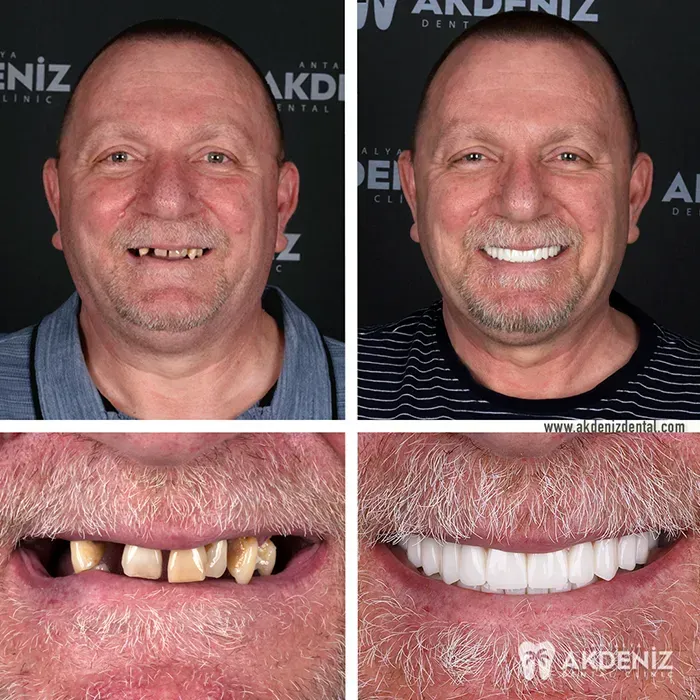


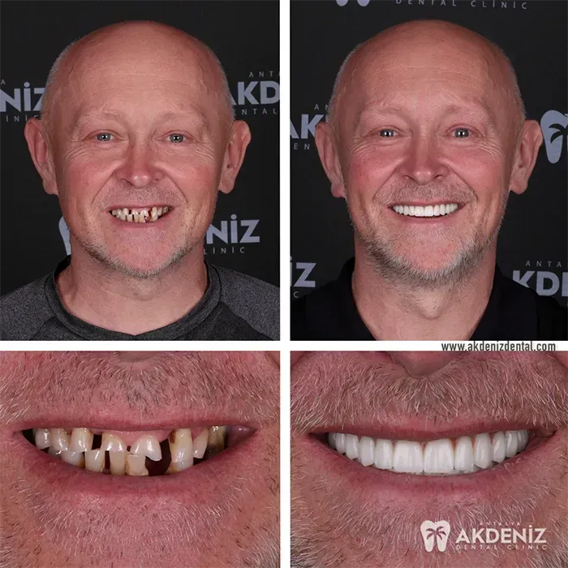

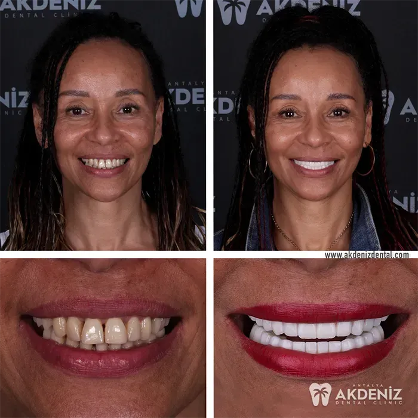

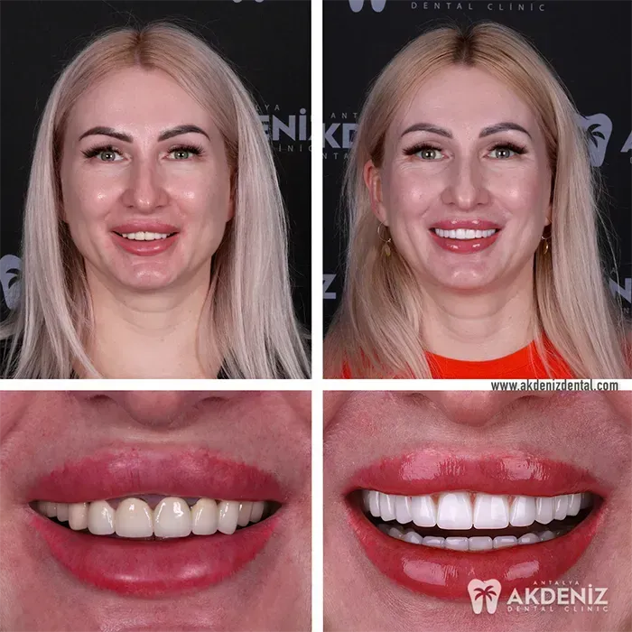

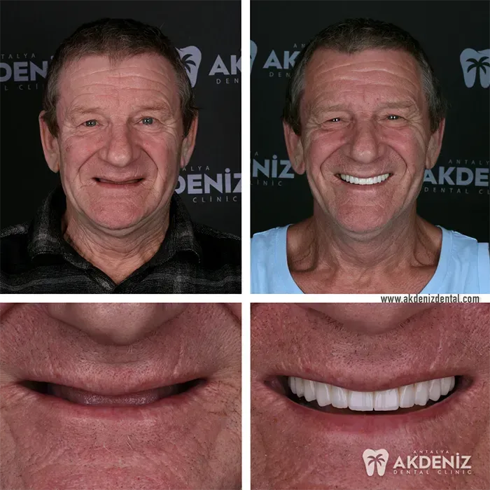


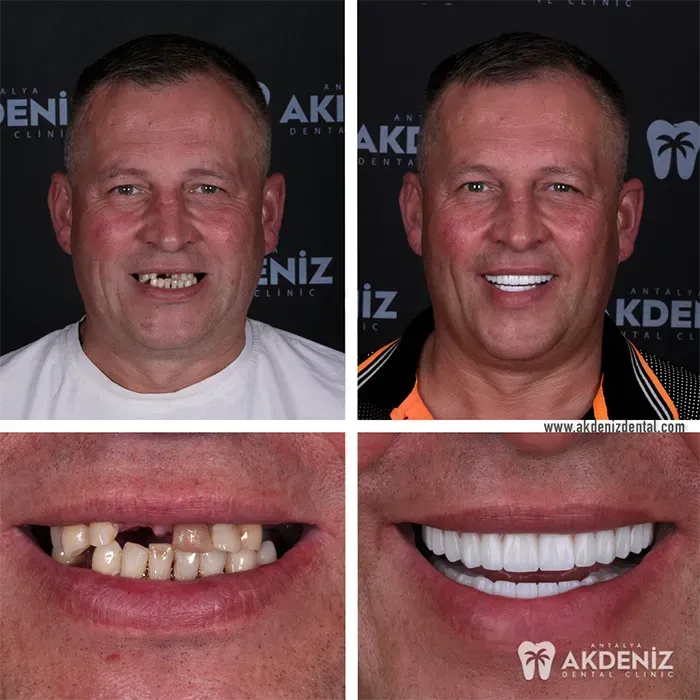


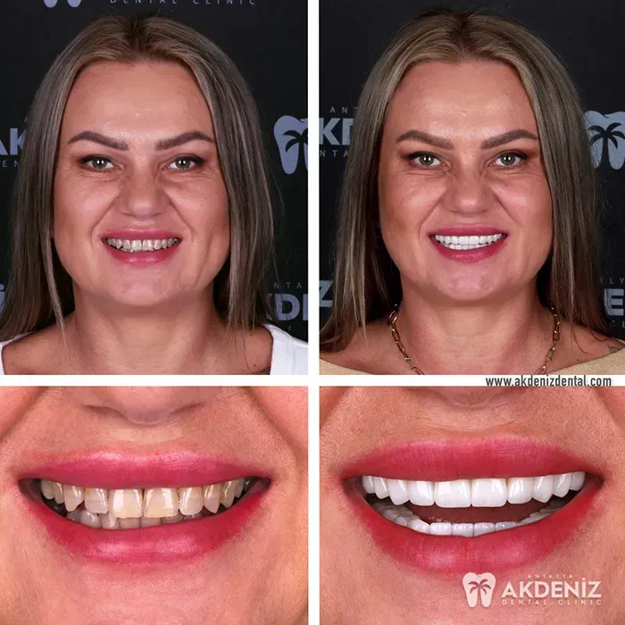

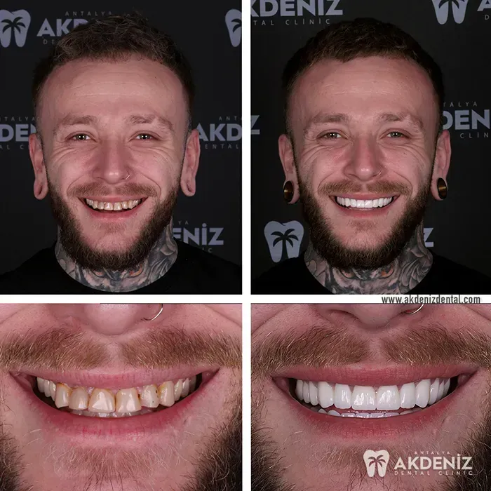

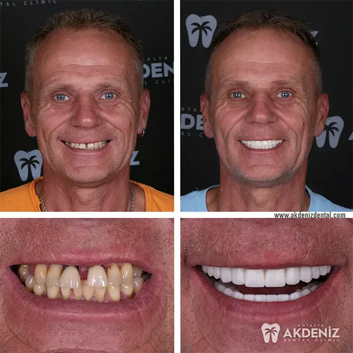


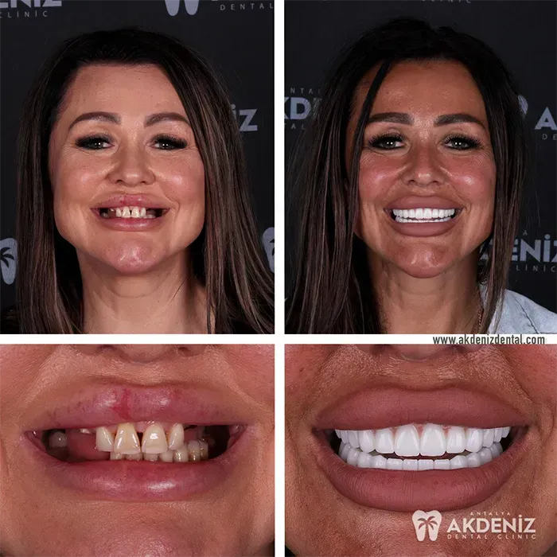


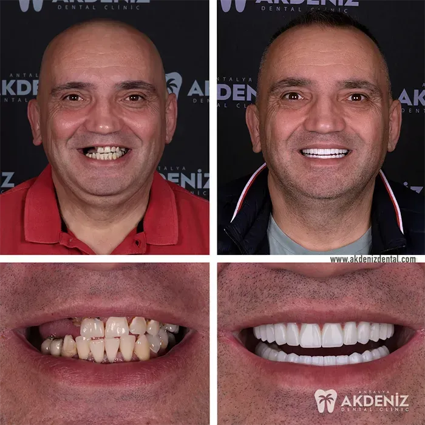


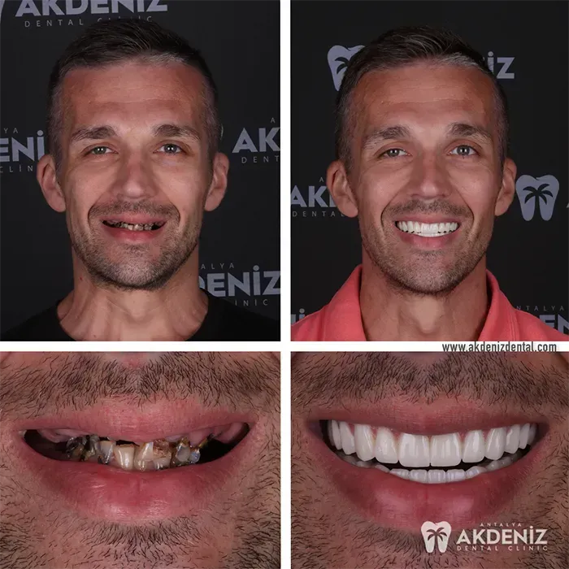

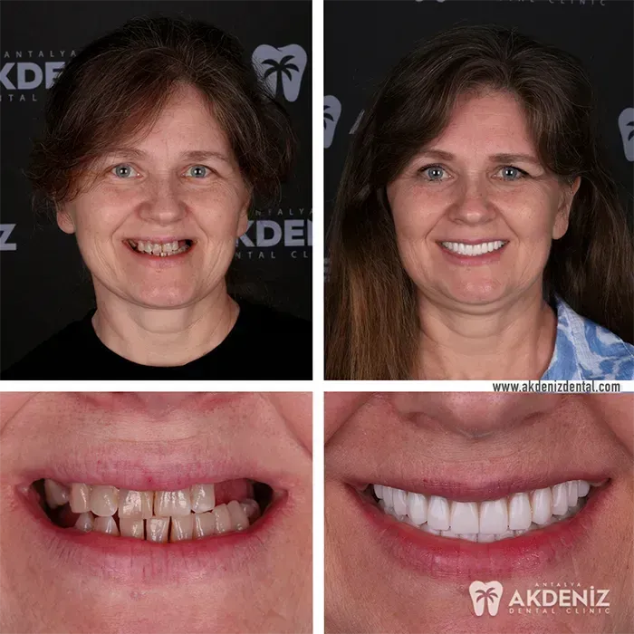

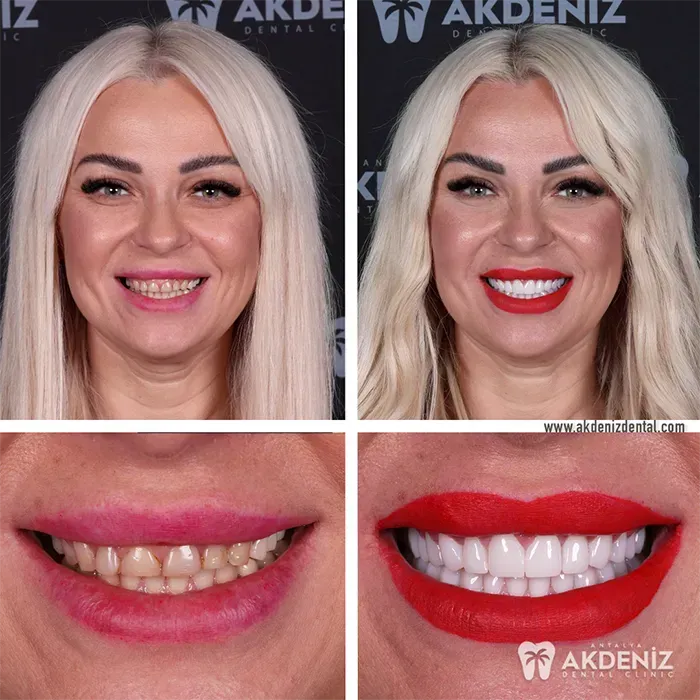

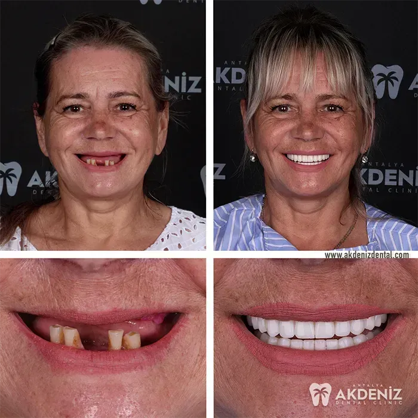


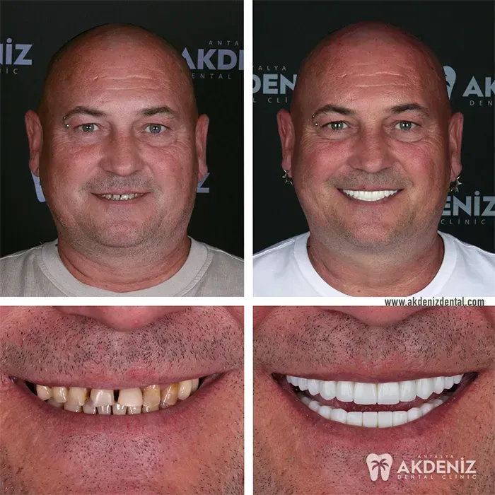


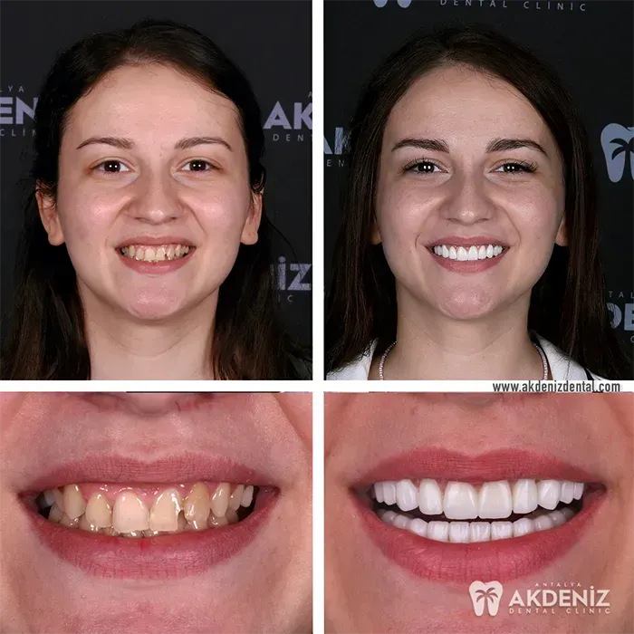

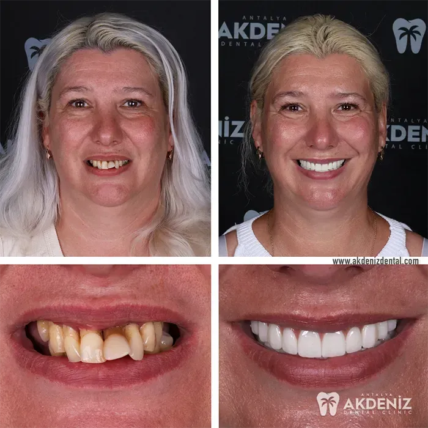

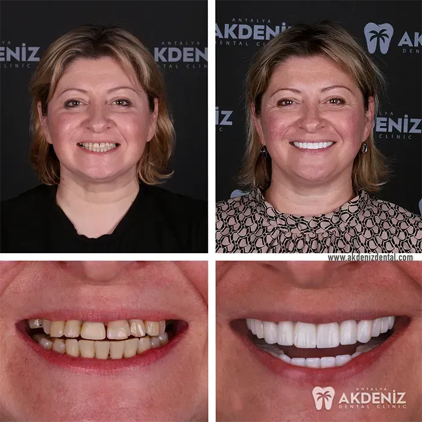

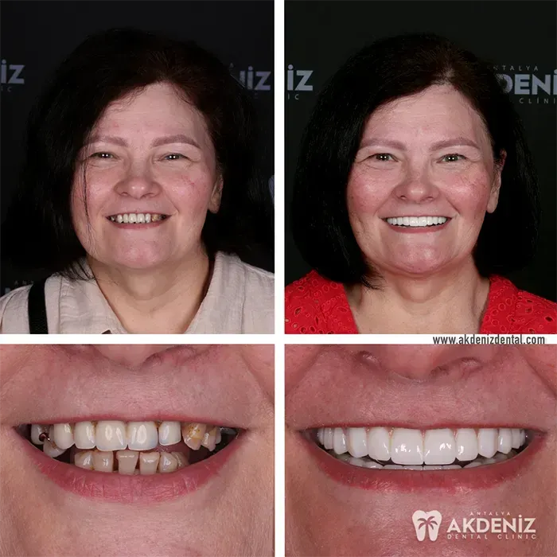


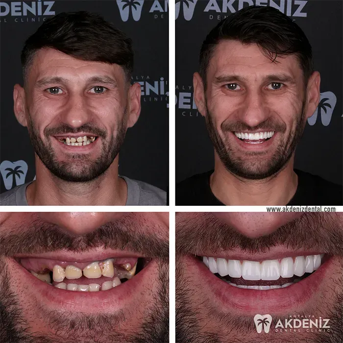


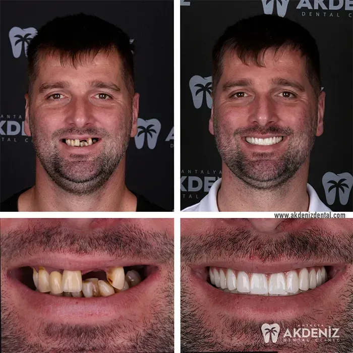